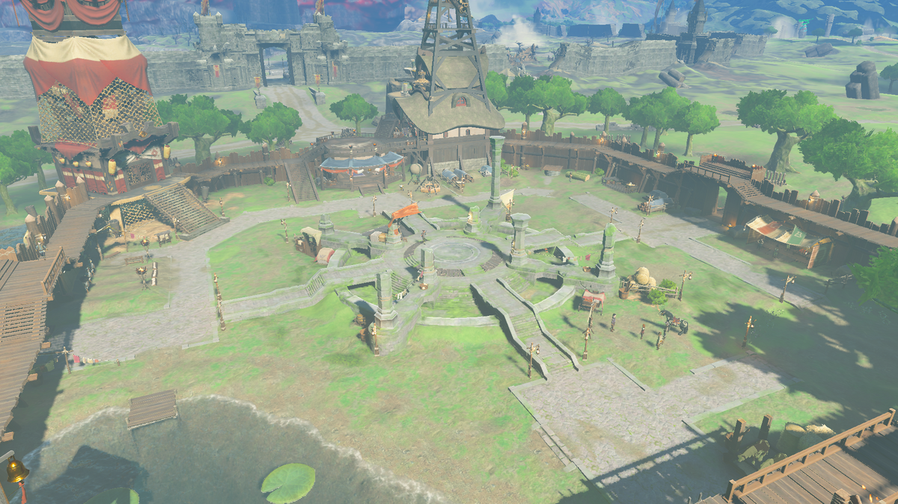
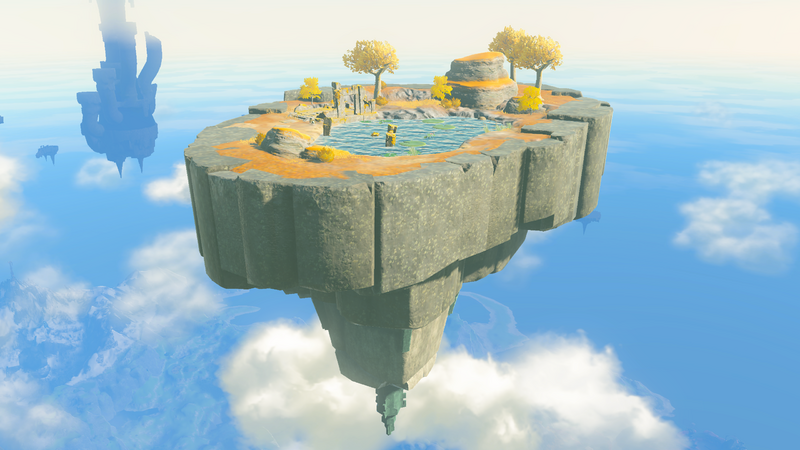

图：天上的五角星形空岛上，就有写着古代文字的石碑。
先说结论：天上找齐 12 块石碑拍照，交给里德乌翻译
监视堡垒里掉下来一块写着古代文字的石碑，调查队的里德乌正在研究它。去卡卡利科村找里德乌，他会告诉你：这样的石碑天上一共有 13 块，监视堡垒这块不用拍，另找 12 块拍下来交给他翻译。每交一张照片，他给 100 卢比；12 块找齐了，还送滑翔伞皮肤"左纳乌调查队的布料"。接任务须先完成任意一座神殿。石碑都在天上的五角星形空岛上，打开天空地图找五角星就能定位。
| 阶段 | 要做的事 |
| 前置 | 完成任意一座神殿 |
| 第一步 | 在监视堡垒和调查队的里德乌说话 |
| 第二步 | 去卡卡利科村找里德乌 |
| 第三步 | 在天上的五角星形空岛上找 12 块石碑拍照 |
| 第四步 | 回卡卡利科村把照片交给里德乌翻译 |
| 奖励 | 每张照片 100 卢比；找齐 12 块送左纳乌调查队的布料 |
接取与奖励
| 项目 | 内容 |
| 接取 | 先在监视堡垒与调查队的里德乌交谈，再去卡卡利科村找里德乌（前置：完成任意一座神殿） |
| 奖励 | 每张照片 100 卢比（银卢比×1）；找齐 12 块送左纳乌调查队的布料（滑翔伞皮肤） |
第一步：在监视堡垒找里德乌
完成任意一座神殿后，监视堡垒里会掉下来一块大石碑，调查队的人围在旁边。找领头的里德乌说话，他会告诉你石碑上写的是古代海拉鲁文字，他看不懂，得回卡卡利科村查资料才能翻译。说完他就带着调查队回村了。

图：完成任意一座神殿后，监视堡垒里会掉下来一块大石碑。
第二步：去卡卡利科村找里德乌
去卡卡利科村找里德乌，他家在防具店对面。他会告诉你：这样的石碑一共有 13 块，监视堡垒那块算第一块，不用再拍；天上还有 12 块，都在五角星形的空岛上。找到后用相机对准碑文拍照，拿回来交给他翻译。石碑上记的是传说时代拉鲁王朝的历史；龙之泪是塞尔达留下的记忆，两者是独立的任务，但讲的都是同一个时代的往事。
第三步：天上找 12 块石碑拍照
打开天空地图，找五角星形状的空岛，石碑就在这些岛上；找到后用相机对准碑文拍照，要让画面拍到古代文字。12 块石碑的大致方位：
| 序号 | 大致方位 |
| 1 | 风之神殿西侧 |
| 2 | 北洛美城堡上层西侧 |
| 3 | 德依布朗遗迹鸟望台西南边 |
| 4 | 雷鸣之岛东侧 |
| 5 | 水之神殿北边、南阿卡莱空岛附近 |
| 6 | 水之神殿西北边、南奥尔汀空岛附近 |
| 7 | 水之神殿西侧 |
| 8 | 哈特尔空岛东侧 |
| 9 | 初始空岛南侧 |
| 10 | 初始空岛西南方向 |
| 11 | 南洛美城堡上层西侧 |
| 12 | 北格鲁德天空诸岛南侧 |
找石碑主要靠鸟望台弹射上天再滑翔过去，多数石碑都能从附近的鸟望台出发到达。有些空岛一站上去中心就开始往下掉，赶紧拍照；掉下去的石碑去下面找，有的会掉进深渊裂谷，拍照要带照明。

图：石碑都在天上的五角星形空岛上，打开天空地图找五角星就能定位。
第四步：回村交照片翻译
找齐 12 块并拍完照后，回卡卡利科村把照片交给里德乌。可以一张一张交，也可以攒齐了一起交；每张照片他给 100 卢比，还会逐块翻译、把照片和译文贴在他家的墙上。12 块全交完，他再送你滑翔伞皮肤"左纳乌调查队的布料"，任务完成。换皮肤同样去哈特诺村染坊找瑟吉，花 20 卢比。
关键信息表
| 项目 | 内容 |
| 接取地点 | 监视堡垒，调查队的里德乌；再去卡卡利科村找里德乌 |
| 前置 | 完成任意一座神殿 |
| 石碑 | 天上一共 13 块，监视堡垒那块不用拍，另找 12 块，都在五角星形空岛上 |
| 拍照 | 用相机对准碑文拍，拍到古代文字才算数 |
| 奖励 | 每张照片 100 卢比；找齐 12 块送左纳乌调查队的布料（滑翔伞皮肤） |
| 注意 | 有些空岛一站上去就开始往下掉，赶紧拍照，掉了就去下面找 |
容易翻车的地方
- 石碑没拍全就交——一共 12 块要拍，监视堡垒那块不用拍，别漏了。
- 空岛掉下去了——有些空岛一站上去中心就开始往下掉，赶紧拍照；掉下去的石碑去下面找，有的会掉进深渊裂谷，拍照要带照明。
- 拍糊了不算——照片要对准碑文，拍到古代文字才算数。
- 顺序不用管——12 块没有固定顺序，先找哪块都行；想按顺序听故事，可以攒齐 12 张再一起交。
一句话总结
完成任意一座神殿后，去监视堡垒找里德乌，再去卡卡利科村找他，天上找齐 12 块石碑拍照交给他翻译，每张 100 卢比，找齐了还送左纳乌调查队的布料。